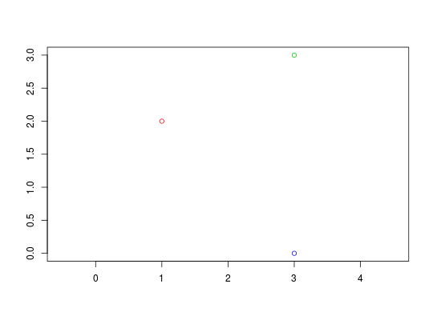
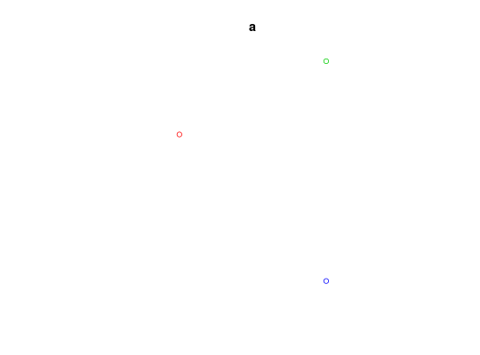
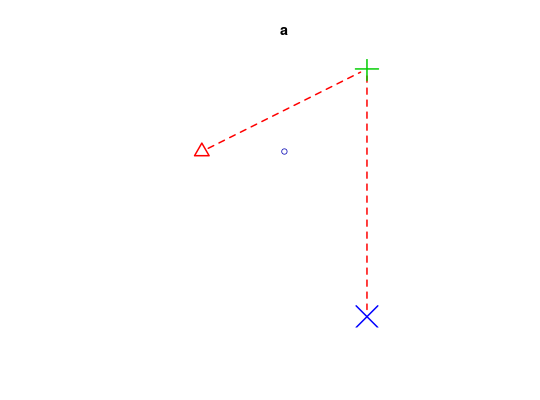
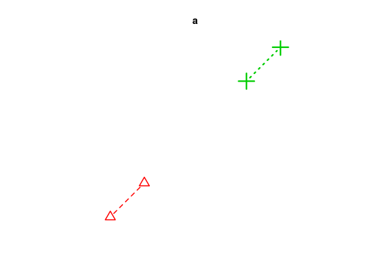
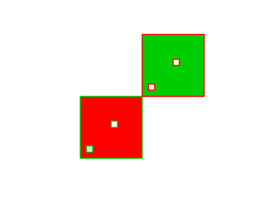
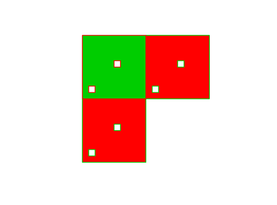
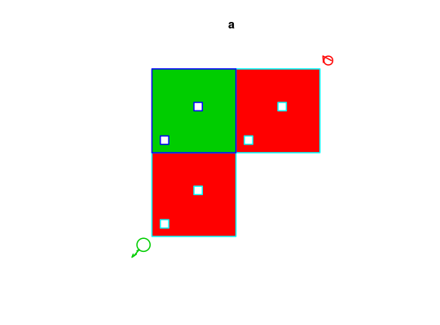

Plot sf object
Plot sf object
blue-pink-yellow color scale
# S3 method for sf plot(x, y, ..., ncol = 10) # S3 method for sfc_POINT plot(x, y, ..., pch = 1, cex = 1, col = 1, bg = 0, lwd = 1, lty = 1, type = "p", add = FALSE) # S3 method for sfc_MULTIPOINT plot(x, y, ..., pch = 1, cex = 1, col = 1, bg = 0, lwd = 1, lty = 1, type = "p", add = FALSE) # S3 method for sfc_LINESTRING plot(x, y, ..., lty = 1, lwd = 1, col = 1, pch = 1, type = "l", add = FALSE) # S3 method for sfc_MULTILINESTRING plot(x, y, ..., lty = 1, lwd = 1, col = 1, pch = 1, type = "l", add = FALSE) # S3 method for sfc_POLYGON plot(x, y, ..., lty = 1, lwd = 1, col = NA, border = 1, add = FALSE, rule = "winding") # S3 method for sfc_MULTIPOLYGON plot(x, y, ..., lty = 1, lwd = 1, col = NA, border = 1, add = FALSE, rule = "winding") # S3 method for sfc_GEOMETRYCOLLECTION plot(x, y, ..., pch = 1, cex = 1, bg = 0, lty = 1, lwd = 1, col = 1, border = 1, add = FALSE) # S3 method for sfc_GEOMETRY plot(x, y, ..., pch = 1, cex = 1, bg = 0, lty = 1, lwd = 1, col = 1, border = 1, add = FALSE) # S3 method for sfg plot(x, ...) sf.colors(xc, n = 10, cutoff.tails = c(0.35, 0.2), alpha = 1, categorical = FALSE)
Arguments
- x
- object of class sf
- y
- ignored
- ...
- further specifications, see plot
- ncol
- integer; default number of colors to be used.
- pch
- plotting symbol
- cex
- symbol size
- col
- color
- bg
- symbol background color
- lwd
- line width
- lty
- line type
- type
- plot type: 'p' for points, 'l' for lines, 'b' for both
- add
- logical; add to current plot?
- border
- color of polygon border
- rule
- see polypath
- xc
- factor or numeric vector, or length-one integer.
- n
- integer; number of colors
- cutoff.tails
- numeric, in [0,0.5] start and end values
- alpha
- numeric, in [0,1], transparency
- categorical
- logical; should a categorical color ramp be returned? if
xis a factor, yes.
Details
sf.colors was taken from bpy.colors, with modified cutoff.tails defaults; for categorical, colors were taken from http://www.colorbrewer2.org/ (if n < 9, Set2, else Set3).
Examples
# plot linestrings: l1 = st_linestring(matrix(runif(6)-0.5,,2)) l2 = st_linestring(matrix(runif(6)-0.5,,2)) l3 = st_linestring(matrix(runif(6)-0.5,,2)) s = st_sf(a=2:4, b=st_sfc(l1,l2,l3)) plot(s, col = s$a, axes = FALSE)plot(s, col = s$a)ll = "+init=epsg:4326 +proj=longlat +datum=WGS84 +no_defs +ellps=WGS84 +towgs84=0,0,0" st_crs(s) = ll plot(s, col = s$a, axes = TRUE)plot(s, col = s$a, lty = s$a, lwd = s$a, pch = s$a, type = 'b')# plot multilinestrings: ml1 = st_multilinestring(list(l1, l2)) ml2 = st_multilinestring(list(l3, l4)) ml = st_sf(a = 2:3, b = st_sfc(ml1, ml2)) plot(ml, col = ml$a, lty = ml$a, lwd = ml$a, pch = ml$a, type = 'b')# plot points: p1 = st_point(c(1,2)) p2 = st_point(c(3,3)) p3 = st_point(c(3,0)) p = st_sf(a=2:4, b=st_sfc(p1,p2,p3)) plot(p, col = s$a, axes = TRUE)plot(p, col = s$a)plot(p, col = p$a, pch = p$a, cex = p$a, bg = s$a, lwd = 2, lty = 2, type = 'b')# multipoints: mp1 = st_multipoint(matrix(1:4,2)) mp2 = st_multipoint(matrix(5:8,2)) mp = st_sf(a = 2:3, b = st_sfc(mp1, mp2)) plot(mp)plot(mp, col = mp$a, pch = mp$a, cex = mp$a, bg = mp$a, lwd = mp$a, lty = mp$a, type = 'b')# polygon: outer = matrix(c(0,0,10,0,10,10,0,10,0,0),ncol=2, byrow=TRUE) hole1 = matrix(c(1,1,1,2,2,2,2,1,1,1),ncol=2, byrow=TRUE) hole2 = matrix(c(5,5,5,6,6,6,6,5,5,5),ncol=2, byrow=TRUE) pl1 = st_polygon(list(outer, hole1, hole2)) pl2 = st_polygon(list(outer+10, hole1+10, hole2+10)) po = st_sf(a = 2:3, st_sfc(pl1,pl2)) plot(po, col = po$a, border = rev(po$a), lwd=3)# multipolygon r10 = matrix(rep(c(0,10),each=5),5) pl1 = list(outer, hole1, hole2) pl2 = list(outer+10, hole1+10, hole2+10) pl3 = list(outer+r10, hole1+r10, hole2+r10) mpo1 = st_multipolygon(list(pl1,pl2)) mpo2 = st_multipolygon(list(pl3)) mpo = st_sf(a=2:3, b=st_sfc(mpo1,mpo2)) plot(mpo, col = mpo$a, border = rev(mpo$a), lwd = 2)# geometrycollection: gc1 = st_geometrycollection(list(mpo1, st_point(c(21,21)), l1 * 2 + 21)) gc2 = st_geometrycollection(list(mpo2, l2 - 2, l3 - 2, st_point(c(-1,-1)))) gc = st_sf(a=2:3, b = st_sfc(gc1,gc2)) plot(gc, cex = gc$a, col = gc$a, border = rev(gc$a) + 2, lwd = 2)sf.colors(10)#> [1] "#0000B3FF" "#0400FFFF" "#4500FFFF" "#8500FFFF" "#C527D8FF" "#FF50AFFF" #> [7] "#FF7A85FF" "#FFA35CFF" "#FFCC33FF" "#FFF50AFF"